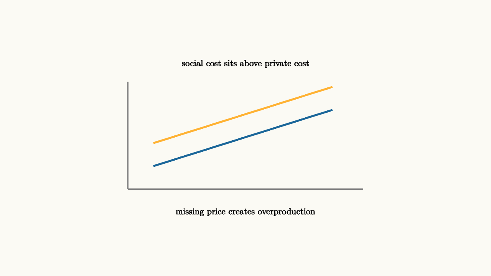

Externalities Put Missing Prices On The Map
A market price can guide decisions well when it reflects the relevant costs and benefits. Externalities appear when part of the cost or benefit lands on someone outside the transaction.
Pollution is the standard negative externality. A factory may count labor, materials, and equipment costs while nearby residents bear health or cleanup costs. The private marginal cost is lower than the social marginal cost.
Noise is another everyday example. A late-night party may be enjoyable for the hosts and guests, while neighbors lose sleep. The private decision counts music, food, and enjoyment. The social decision also counts the lost rest imposed on others. Externalities make the boundary of the decision too small.

source
background = [0.985, 0.98, 0.955, 1]
camera = Camera(4.8b)
mesh costs = block {
. stroke{GRAY, 2} Line(start: [-2.3, -1.0, 0], end: [2.3, -1.0, 0])
. stroke{GRAY, 2} Line(start: [-2.3, -1.0, 0], end: [-2.3, 1.1, 0])
. stroke{BLUE, 3} Line(start: [-1.8, -0.55, 0], end: [1.7, 0.55, 0])
. stroke{ORANGE, 3} Line(start: [-1.8, -0.1, 0], end: [1.7, 1.0, 0])
. center{[0, 1.45, 0]} Text("social cost sits above private cost", 0.62)
. center{[0, -1.45, 0]} Text("missing price creates overproduction", 0.62)
}
"private and social cost"
play Fade(0.6)The efficient quantity is where marginal social benefit equals marginal social cost. If the market only sees private cost, it can choose too much of the activity.
A corrective tax can move the private decision closer to the social one:
source
param tax = 0.0
background = [0.985, 0.98, 0.955, 1]
camera = Camera(4.8b)
let Shift = |tax| block {
. stroke{GRAY, 2} Line(start: [-2.3, -1.0, 0], end: [2.3, -1.0, 0])
. stroke{BLUE, 3} Line(start: [-1.8, -0.65 + 0.55 * tax, 0], end: [1.7, 0.45 + 0.55 * tax, 0])
. stroke{ORANGE, 3} Line(start: [-1.8, 0.0, 0], end: [1.7, 1.1, 0])
. center{[0, 1.45, 0]} Text("a tax can add the missing cost", 0.62)
}
"private cost"
mesh s = Shift(tax: $tax)
play Fade(0.5)
"after corrective price"
tax = 1.0
s = Shift(tax: $tax)
play Lerp(1.0)Positive externalities work the other way. Vaccination, education, and research can create benefits beyond the person making the decision. Subsidies or public provision can help when private incentives underproduce social value.
A vaccination example is useful because the private and social benefits are both visible. The vaccinated person lowers their own risk, and they also reduce the chance of passing illness to others. A purely private calculation can miss that second benefit. A subsidy, school requirement, or public clinic can be understood as a way of bringing the wider benefit into the choice.
The size of the corrective tax is the hard part. Measuring marginal external cost can require science, engineering, health data, and local knowledge. A carbon tax, a congestion charge, or a noise fee is conceptually simple in a graph and politically difficult in practice. The model clarifies the target even when estimating the target takes work.
Property rights and bargaining can sometimes solve smaller externalities. If neighbors can easily talk, measure the harm, and make agreements, they may find a private arrangement. When many people are affected, when harm is hard to trace, or when bargaining is expensive, policy becomes more important.
The visual lesson is to draw two marginal cost curves and ask which one the decision maker actually sees. If the private curve is below the social curve, the gap is the missing harm. If the private benefit curve is below the social benefit curve, the gap is the missing spillover benefit.
The lesson to keep: externalities are missing prices. The math asks whose marginal costs and benefits are being counted, then asks how the missing values could enter the decision.